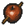
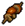

First dishes
First dishes is a technology in the Cooking Tech Tree.
Unlocks
 Baked apple |
 Baked mushrooms |
Berry Pie |
First dishes is a technology in the Cooking Tech Tree.
 Baked apple |
 Baked mushrooms |
Berry Pie |